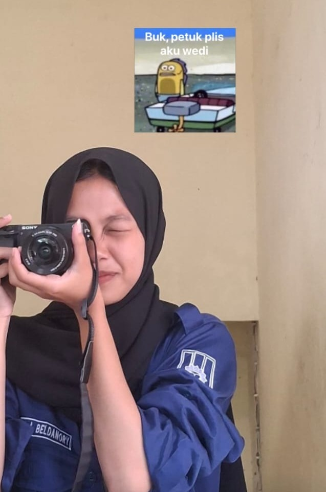

KODE &
EKSPRESI
DIGITAL.
Halo! Saya seorang kreator kode muda yang fokus membedah arsitektur web modern dan menyusun mekanisme permainan gim interaktif.

Sudut Pandang
Bagi saya, pemrograman adalah perpaduan ilmu pasti dan seni visual. Setiap fungsi algoritma adalah mesin penggerak, dan setiap baris kode gaya CSS adalah kuas pewarnanya.
Curriculum Vitae
Akademik
SMK Muhammadiyah 1 Bantul
Pengembangan Perangkat Lunak dan Gim (PPLG)
Mempelajari dasar algoritma komputer, pemrograman berorientasi objek (PBO), basis data SQL, rekayasa web, hingga pemodelan gim 2D/3D dasar.
Eksplorasi & Organisasi
Anggota Tim IT / Lab Komputer
Internal Jurusan PPLG
Membantu pemeliharaan jaringan lab, instalasi environment development perangkat lunak, serta ikut serta dalam proyek tim sekolah.
Senjata Teknis
Galeri Karya
Situs Sekolah Interaktif
Eksperimen merancang ulang antarmuka web informasi jurusan sekolah dengan teknik animasi scroll responsif.
Platformer 2D: Bantul Adventure
Prototipe game petualangan sederhana berbasis web menggunakan kanvas kode kontrol keyboard penuh.
Aplikasi Kasir Kantin Digital
Desain arsitektur wireframe dan purwarupa sistem manajemen transaksi cepat berbasis perangkat bergerak.
Mari Nyalakan
Ide Hebat Anda.
Buka kesempatan magang industri, proyek lepas web, atau sekadar berdiskusi santai seputar teknologi gim.
Hubungi Saya →